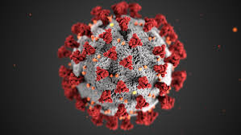
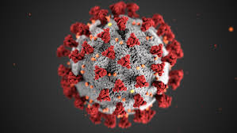

Sintomas
Los principales sintomas del covid-19 son:
Fiebre o sensacion de cansancio (38°C)
Tos seca
Dolor muscular o malestar
Pérdida del olfato o del gusto
Fuerte dolor de garganta
Agentes patógenos
El SARS-CoV-2 es el agente patógeno responsable del COVID-19, enfermedad infecciosa que puede evolucionar desde un cuadro viral leve hasta la falla multiorgánica y muerte.
Prevención
Vacunación
Higiene Personal
Ambiente y Distanciamiento
Modo de Contagio
El COVID-19 se contagia principalmente así: 1.Por el aire: al respirar gotitas o aerosoles que salen cuando alguien infectado habla, tose o estornuda. 2.Por contacto cercano: estar muy cerca de una persona contagiada. 3.Por tocar superficies contaminadas y luego tocarse la cara (menos común).
Tratamiento
El tratamiento para el covid es:
Antivirales Orales
Antivirales Intravenosos
Manejo de Síntomas
 

Origen
El origen del covid-19 (Causado por el virus SARS-CoV-2) se situa en Wuhan,China, a finales del 2019
Las dos teorias principales sobre como se surgió son:
Teoria 1
La hipotesis más aceptada es el origen Zoonotico.El virus paso de murcielagos a un animal intemediario (probablemente a un perro, mapache o pinguino), y de ahi a los humanos, Los primeros cassos se vincularon al Mercado de Mariscos de Huanan en Wuhan
Teoria 2
Fuga del Laboratorio: La posibilidad de un escape accidental del virus desde un centro de investigacion, como el instituto de Virologia de Wuhan